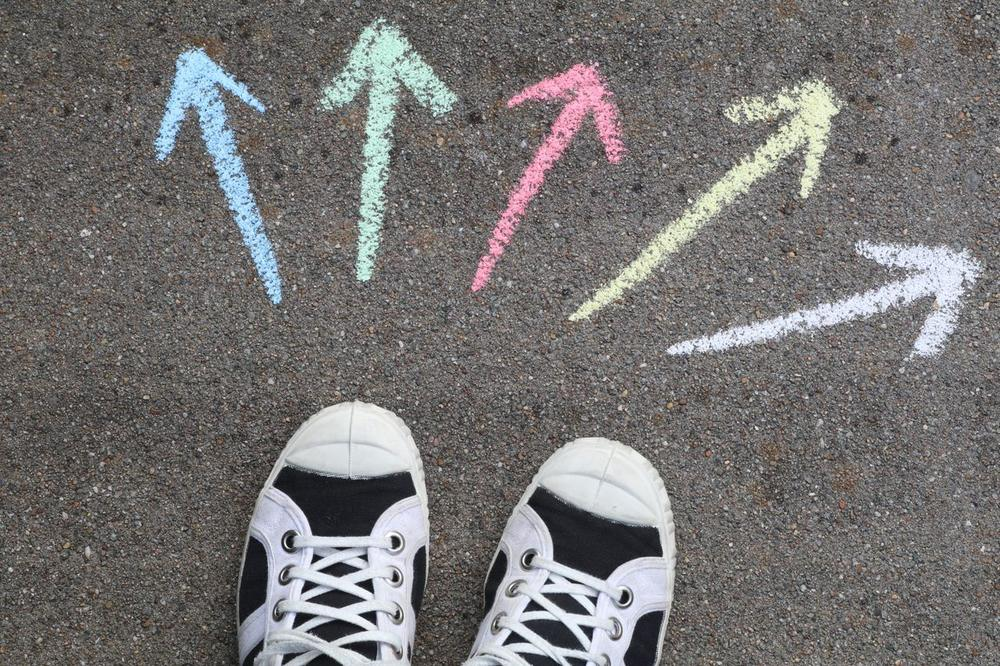

A guide that moves with you
An illustrated figure demonstrates every step in time with the timer. It counts your reps, switches sides when it’s time, and pauses when you do.
About MYMOVE
For most of us, it’s deciding what to do. Searching for a workout video, watching a few minutes, deciding it isn’t right, and starting over can use up the time you had to move.
MYMOVE skips the search. You get one clear suggestion that fits your moment, and a guide to follow from the first step to the last.

Why I built MYMOVE
I created MYMOVE to help people find simple, personalized ways to incorporate movement into their everyday lives. I wanted to make being active feel more approachable by taking the guesswork out of deciding what to do. By considering how much time someone has, how they’re feeling, and where they are, MYMOVE offers movement ideas that fit their day and remind them that even small steps can make a difference.
Get in Touch
Erika Harvey
Creator of MYMOVE
MMC6936 Capstone Project
What makes MYMOVE different
An illustrated figure demonstrates every step in time with the timer. It counts your reps, switches sides when it’s time, and pauses when you do.
Every move uses simple, low-impact motions and no equipment. If you’ve never done a stretch or exercise before, you can still follow along at your own comfort level.
Fourteen activities cover home, work, the outdoors, and the gym. The number of movements adjusts to the time you choose, so a five-minute break feels just as complete as thirty minutes.
MYMOVE is still growing. Next, I plan to add more routines, more ways to personalize your move, and a way to keep track of your progress over time. Have an idea? I’d love to hear it.